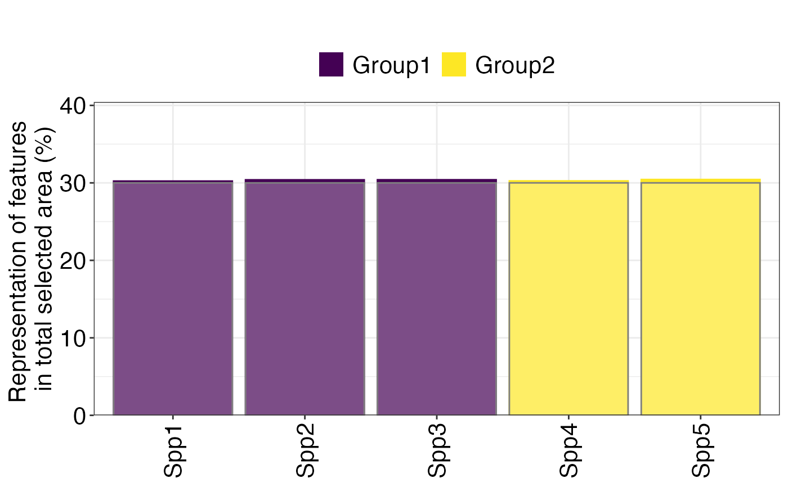
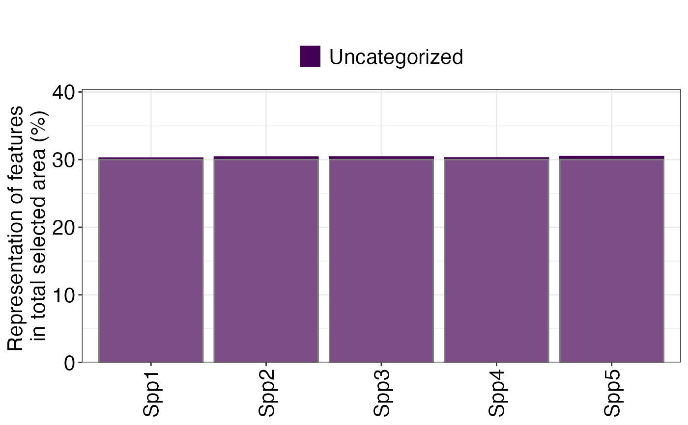
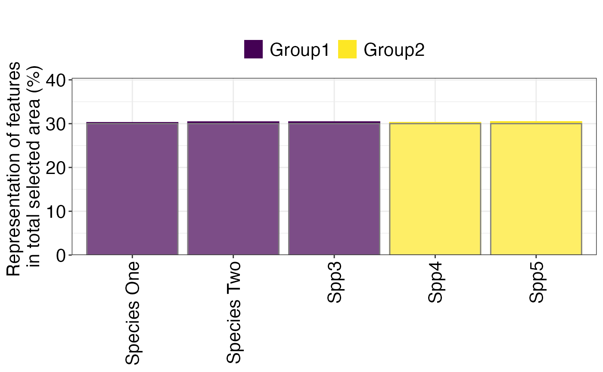

Plot Feature Representation (Target Achievement)
Source:R/splnr_featureRep.R
splnr_plot_featureRep.Rdsplnr_plot_featureRep() creates a bar plot to visualize the representation
of features in a conservation solution, indicating how well targets are met.
It can categorize features, rename them for clarity, and optionally display
the target levels on the plot.
Usage
splnr_plot_featureRep(
df,
category = NA,
categoryFeatureCol = NA,
renameFeatures = FALSE,
namesToReplace = NA,
nr = 1,
showTarget = NA,
plotTitle = "",
sort_by = "category",
...
)Arguments
- df
A data.frame or tibble containing the feature representation information. This typically results from the
splnr_get_featureRep()function and should include at leastfeatureandrelative_heldcolumns, and optionallytargetandincidental.- category
A named data.frame or tibble that provides grouping information for features. It should contain a column that can be matched with the
featurecolumn indf(by default, a column namedfeature, or specified bycategoryFeatureCol), and a column namedcategoryfor grouping the plot output. IfNA(default), no categorization is applied.- categoryFeatureCol
A character string specifying the name of the column in the
categorydata frame that contains the feature information to be matched withdf$feature. This is used if thecategorydata frame does not have a column explicitly named'feature'.- renameFeatures
A logical value. If
TRUE, feature names in the plot will be replaced with common names provided innamesToReplace.- namesToReplace
A data.frame containing two columns:
'nameVariable'(the original feature name) and'nameCommon'(the common name to replace it with). Required ifrenameFeaturesisTRUE.- nr
An integer specifying the number of rows for the legend.
- showTarget
A logical value. If
TRUE, a transparent bar representing the target level for each feature will be shown on the plot.- plotTitle
A character string for the title of the plot. Can be an empty string
""(default).- sort_by
A character string specifying the column by which to sort the features on the x-axis. Accepted values include:
"category","feature","target","representation"(relative_held), or"difference"(between representation and target).- ...
Other arguments passed on to
ggplot2::theme()to customize the plot's theme.
Value
A ggplot2::ggplot object representing the feature representation bar plot.
Examples
# For a full example, ensure 'dat_species_bin', 'dat_category' are available
# (e.g., from the 'prioritizrdata' package or defined in your package's data)
pDat <- prioritizr::problem(dat_species_bin %>% dplyr::mutate(Cost = runif(n = dim(.)[[1]])),
features = c("Spp1", "Spp2", "Spp3", "Spp4", "Spp5"),
cost_column = "Cost"
) %>%
prioritizr::add_min_set_objective() %>%
prioritizr::add_relative_targets(0.3) %>%
prioritizr::add_binary_decisions() %>%
prioritizr::add_default_solver(verbose = FALSE)
soln <- pDat %>%
prioritizr::solve.ConservationProblem()
# including incidental species coverage
df <- splnr_get_featureRep( # Assuming splnr_get_featureRep is available
soln = soln,
pDat = pDat
)
#> No non-selected features to process.
#> No specific climate-smart approach detected or standard approach used. Using targets from 'pDat'.
# Basic plot with categories and targets shown
(splnr_plot_featureRep(df, category = dat_category, showTarget = TRUE))
#> Warning: argument is not numeric or logical: returning NA
#> Warning: argument is not numeric or logical: returning NA
#> Warning: argument is not numeric or logical: returning NA
#> Warning: argument is not numeric or logical: returning NA
#> Warning: argument is not numeric or logical: returning NA

# Plot without categories, sorted by feature name
(splnr_plot_featureRep(df, showTarget = TRUE, sort_by = "feature"))
#> Warning: argument is not numeric or logical: returning NA
#> Warning: argument is not numeric or logical: returning NA
#> Warning: argument is not numeric or logical: returning NA
#> Warning: argument is not numeric or logical: returning NA
#> Warning: argument is not numeric or logical: returning NA

# Example with feature renaming
names_to_replace_df <- tibble::tibble(
nameVariable = c("Spp1", "Spp2"),
nameCommon = c("Species One", "Species Two")
)
(splnr_plot_featureRep(df,
category = dat_category,
renameFeatures = TRUE,
namesToReplace = names_to_replace_df,
showTarget = TRUE
))
#> Warning: argument is not numeric or logical: returning NA
#> Warning: argument is not numeric or logical: returning NA
#> Warning: argument is not numeric or logical: returning NA
#> Warning: argument is not numeric or logical: returning NA
#> Warning: argument is not numeric or logical: returning NA
